This game started with the theme “changing of time.” I wanted to create a visual novel where time wasn't just a gameplay mechanic but also affected the storyline. I was also very drawn to horror-style games and wanted to incorporate elements of that as well.
While brainstorming, I thought of an idea: What if instead of trying to survive a horror story, the player is already dead and is trying to find out the reasons behind their death?
This became the starting point for Before I Fade, with the player character being given opportunities to traverse the past and present to search for clues as to why they died.
Visual style
Background
When playing the game, I wanted players to feel immersed in a dream-like state while still making the past and present visually distinct.
I was able to achieve this using Godot/'s modulate property. I first created the base environment with vibrant and cheerful colors, then used modulate to shift the colors into a more gloomy blue-greenish state when playing as the ghost in the present.
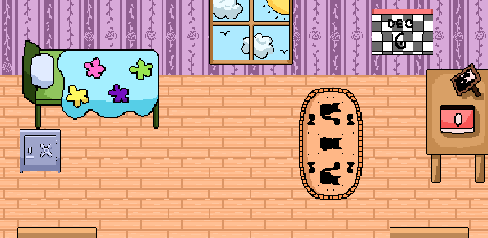
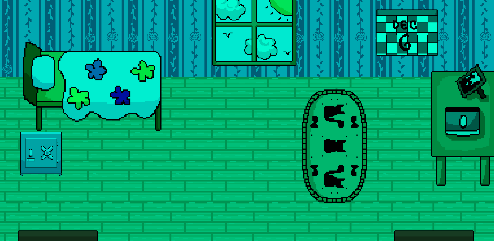
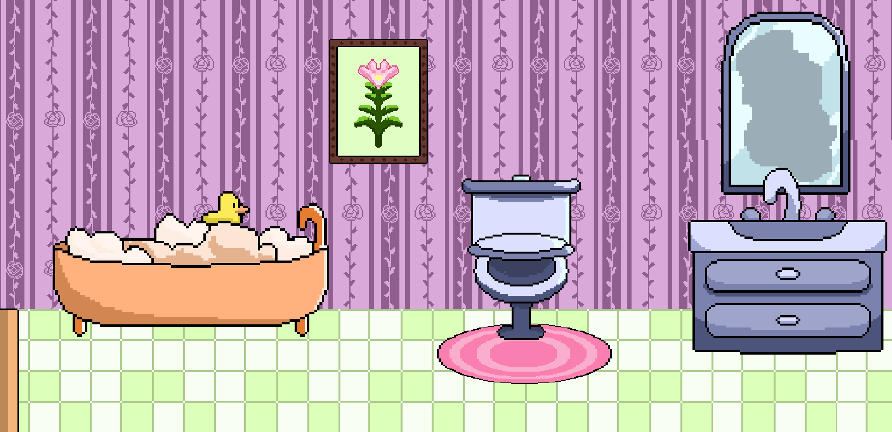
Characters
This game has 2 character choices, with each one affecting how the story will play out.
I wanted the characters to still feel expressive despite the pixel art style, so I focused on detailed close-ups, colors, and animations to showcase their personalities and roles in the story.
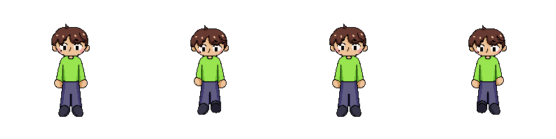
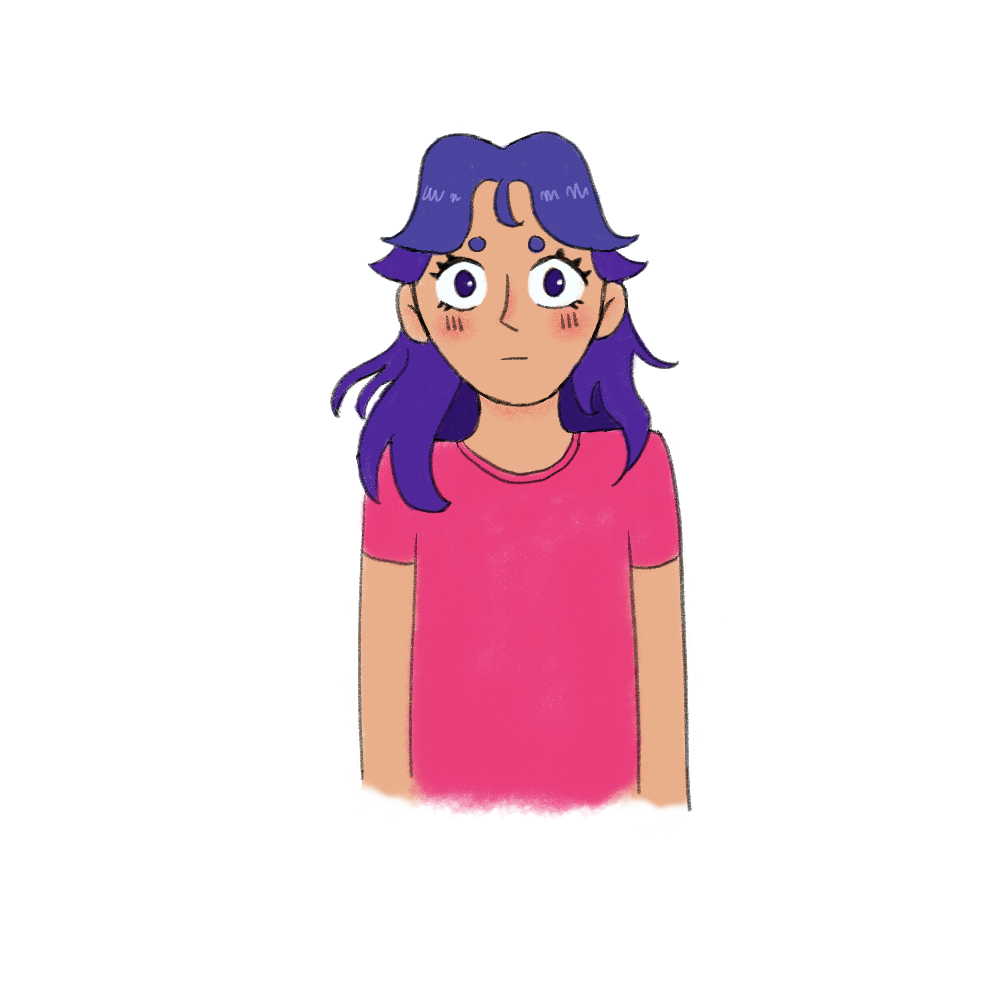
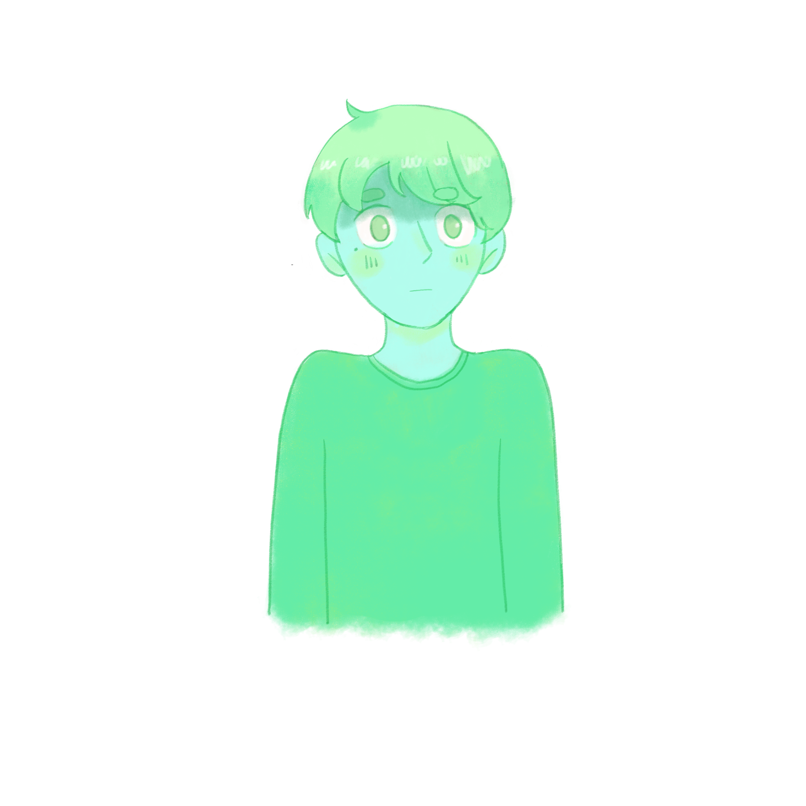
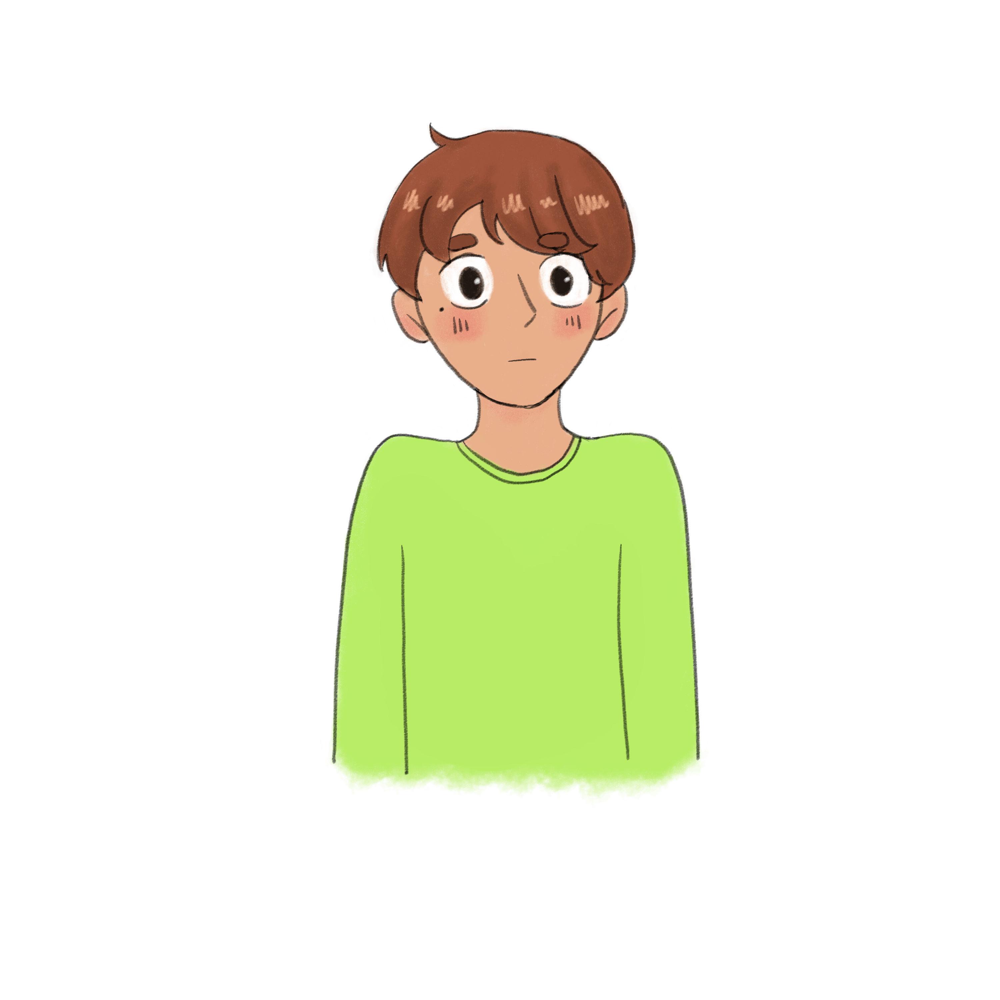
UI
I kept the in game UI simple so as not to take away from game immersion. During puzzles, a small panel displays hearts and a timer in the top left corner.
I also designed a pause menu where players can turn the music and sound effects on or off, view the controls, and restart the game.
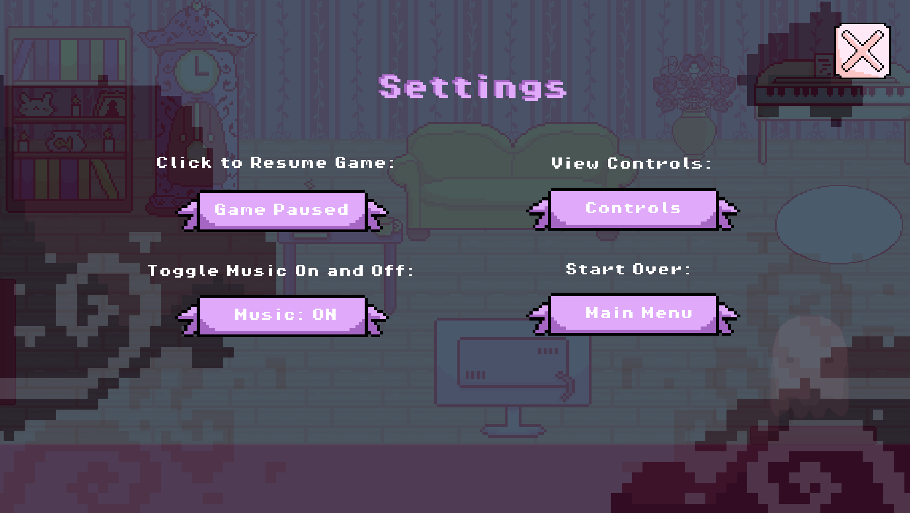
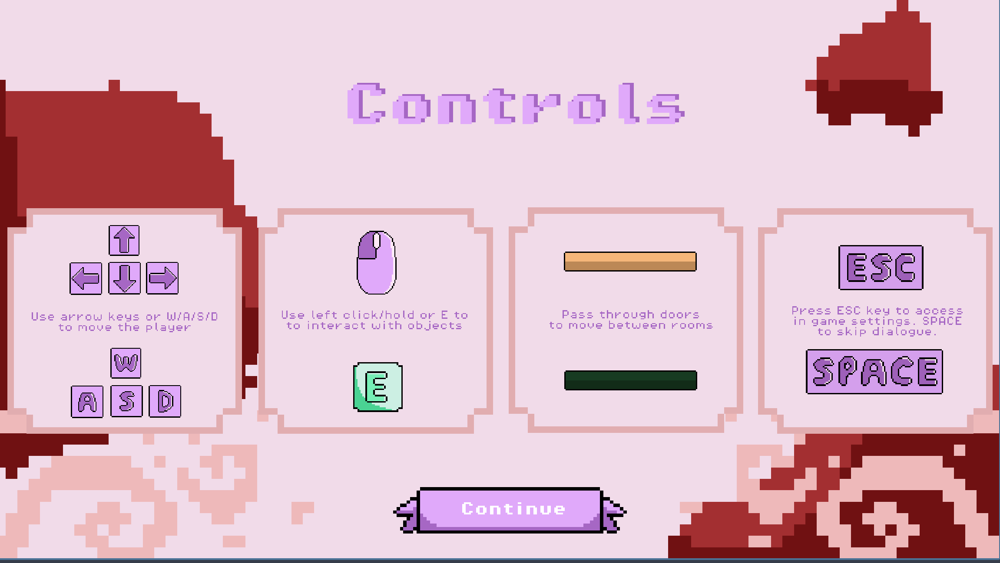
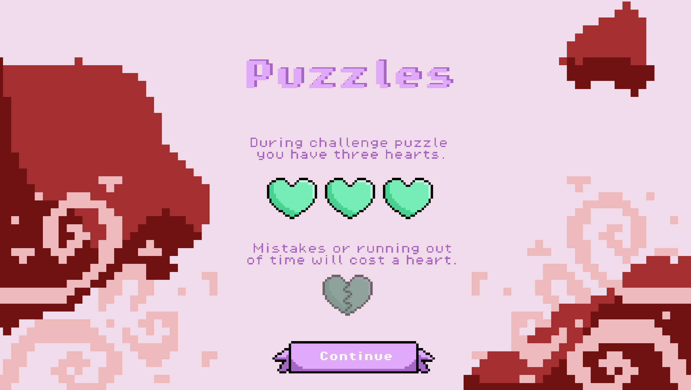
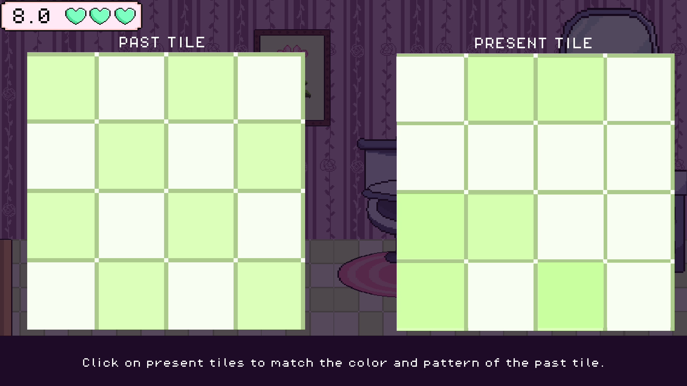
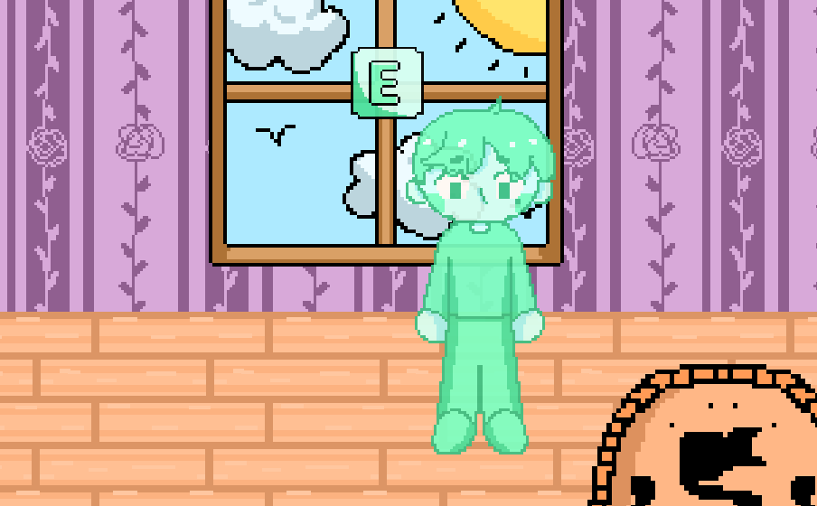
Development
The game’s flow is very simple, you first choose a gameplay mode and a character, beat a puzzle in each of the 6 house rooms to obtain a diary page and continue beating puzzles until you reach the end!
Building the time mechanic:
I wanted players to go back and forth between past and present to solve puzzles . Players could then use information in the past and bring it to the present to piece together information.
Objects and characters can have different appearances and positions in the past and present.I used Godot's Timer node to create a countdown while also playing music that speeds up as the timer approaches zero.
Challenges
One of the main problems I ran into was using AnimationPlayers for dialogue. Since there were 2 characters, each dialogue animation would need to be duplicated and customized for each character. This was also inefficient for the player since they had to wait for the full text animation to finish before moving on.
After some research, I came across a seek() method for Godot's AnimationPlayers. I used this to create a function that would move to the next keyframe when the player pressed Space, effectively skipping the animation and allowing the player to read at their own pace.
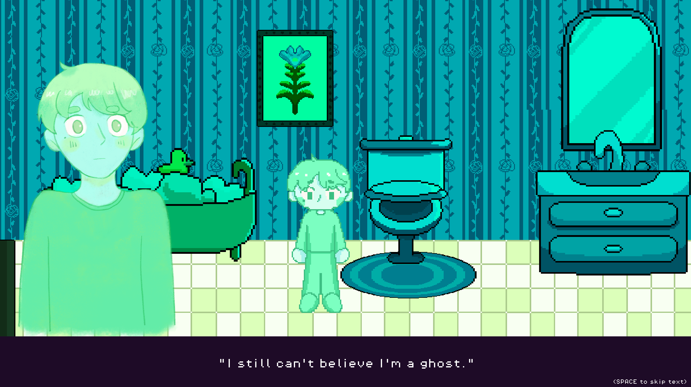
Iterations
After an initial prototype was made, Before I fade was put into 4 rounds of iterative QA testing.
The feedback helped me find issues I didn't notice during development, especially around controls, player freedom, pacing, and how much information the game gave the player.
Controls:
One of the biggest things many people expressed was the need for more familiar controls such as WASD keys rather than only arrow keys.
Navigation issues:
Some playtesters felt confused as to what to do even with in-game text instructions.
Instead of adding even more text, I added directional arrow animations to make navigation easier to understand while still allowing players to explore the rooms themselves.
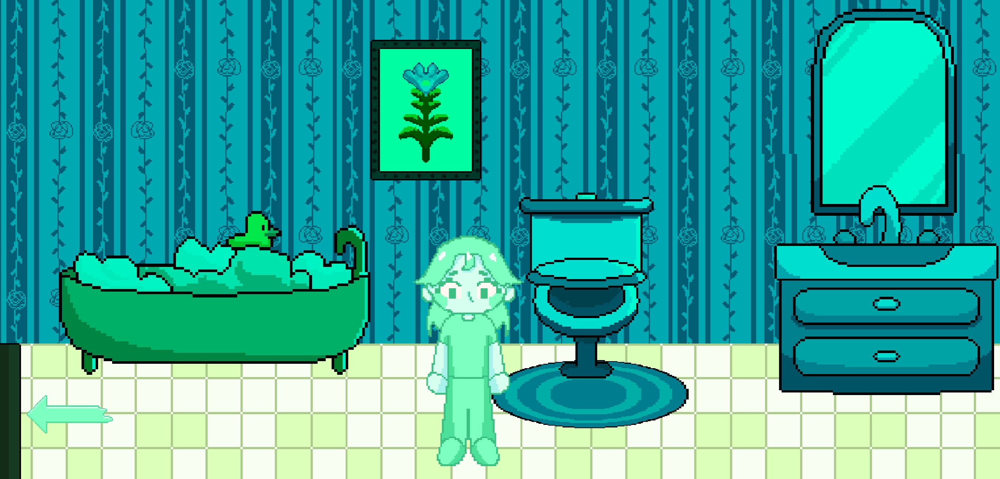
Reusable systems:
As the game grew, manually updating every scene became difficult. I created global code systems, reusable linked scenes, and scene counters to make it easier to manage shared elements like the pause menu and track story progression
CONCLUSION
CONCLUSION
CONCLUSION
Although Before I Fade started as a simple game jam project, it quickly became the biggest and most complex project I've ever worked on.
One of my biggest takeaways was seeing how much player feedback can change a game. Each round of testing allowed me to use feedback to make the game easier to understand and more fun to play.
I'm really proud of how far Before I Fade has grown and how much support I received from the community!